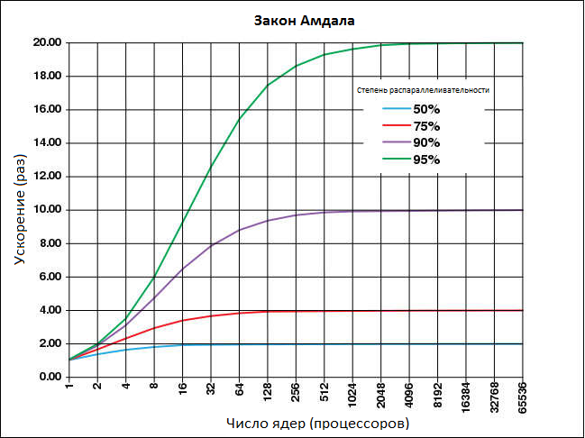

Закон Амдала (англ. Amdahl's law, иногда также Закон Амдаля-Уэра) — закон, который иллюстрирует ограничение роста производительности вычислительной системы с увеличением количества вычислителей.
Джин Амдал сформулировал закон в 1967 году, обнаружив простое по существу, но непреодолимое по содержанию ограничение на рост производительности при распараллеливании вычислений: «В случае, когда задача разделяется на несколько частей, суммарное время её выполнения на параллельной системе не может быть меньше времени выполнения самого длинного фрагмента». Согласно этому закону, ускорение выполнения программы за счёт распараллеливания её инструкций на множестве вычислителей ограничено временем, необходимым для выполнения её последовательных инструкций.

Другими словами: ускорение программы с помощью параллельных вычислений на нескольких процессорах ограничено размером последовательной части программы. Например, если можно распараллелить 95% программы, то теоретически максимальное ускорение составит максимум 20×, невзирая на то, сколько процессоров используется.